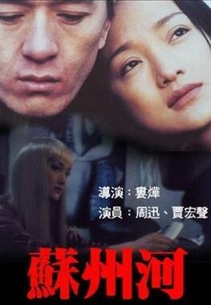

中国电影从第五代导演开始，开始注重在乡土题材上挖掘内容，《黄土地》，《红高粱》等电影的巨大成功和屡屡获奖使得该类型的电影更加得到了国内导演的青睐。所以乡土题材类型的电影成为了中国电影的一个特点，它所代表的是中国的“农民形象”，耿直，粗犷，原始，深深扎根于土地的中国形象，这与当时中国在农业大国的转型上有着密不可分的联系。而当时导演们不约而同的采取这一选材风格不仅是与社会的主要特征有关，而且与当时的文学特征也有着密切的关系，这些获得成功的重要电影有很大一部分都改编自小说，而当时的小说即将重点放在对乡村题材的挖掘上，所以这也在电影中体现了出来。
在乡土电影后，中国电影开始转型，开始对社会的矛盾进行一系列的挖掘，其中较为突出的作品为《黑炮事件》，《北京杂种》，《苏州河》等。这类电影在国际上激起了一些水花，但是持续时间不长，因为其涉及领域毕竟小众，而且题材偏激，并且电影风格不成体系，所以最终也没有持久的产生影响。
其中在经济学人中所表现的另外一种转向就是对都市生活的挖掘。随着社会结构的转变，生活水平的提高，有一部分导演开始转向描述较为富有的城市定居者的生活，这在外媒的报道中有一定的提及，代表了中国电影的一种转变，也表现了外媒对中国城市生活的一种好奇与向往。
